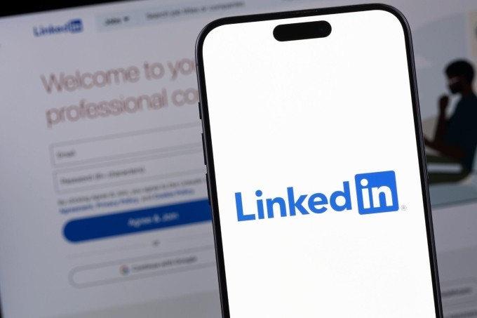

Mỹ – Iran đạt thỏa thuận về ngừng bắn, mở cửa eo biển Hormuz trong hai tuần
Mỹ và Iran đồng ý ngừng bắn trong hai tuần, Tehran sẽ cho phép tàu thuyền đi qua eo biển Hormuz trong thời gian này "với sự điều phối từ lực lượng vũ trăng".
Mạng xã hội nghề nghiệp LinkedIn bị phát hiện sử dụng đoạn mã ẩn để kiểm tra hàng nghìn tiện ích mở rộng và thu thập thông số phần cứng của người truy cập. Theo báo cáo BrowserGate của tổ chức Fairlinked và được chuyên trang bảo mật BleepingComputer xác nhận, LinkedIn đã nhúng một đoạn mã java script vào mỗi lần tải trang. Mã có khả năng quét trình duyệt người dùng nhằm tìm kiếm 6.236 tiện ích mở rộng (extension) trên Chrome nếu chúng được cài đặt, đồng thời thu thập dữ liệu đo lường chi tiết của thiết bị.
Các mã ẩn hoạt động bằng cách cố gắng truy cập các tài nguyên tệp gắn liền với ID của tiện ích cụ thể, một kỹ thuật đã được ghi nhận nhằm tìm kiếm sự hiện diện của extension trên trình duyệt nhân Chromium. Danh sách tiện ích bị theo dõi đã tăng từ khoảng 2.000 vào năm 2025 lên hơn 6.000 ở hiện tại. Bên cạnh tiện ích, LinkedIn còn thu thập thông số phần cứng thiết bị của người dùng gồm: số lõi CPU, dung lượng bộ nhớ khả dụng, độ phân giải màn hình, múi giờ, cài đặt ngôn ngữ và trạng thái pin. Dữ liệu này thường được dùng để tạo hồ sơ thiết bị ẩn danh nhưng do tài khoản LinkedIn gắn liền với tên thật, nghề nghiệp và công ty, chúng có thể được dùng để định danh chính xác cá nhân.
Báo cáo từ Fairlinked cho biết nhiều tiện ích bị nhắm mục tiêu là các công cụ hỗ trợ bán hàng hoặc khai thác dữ liệu từ đối thủ cạnh tranh trực tiếp với LinkedIn như Apollo, Lusha hay ZoomInfo. Tổng cộng có hơn 200 sản phẩm đối thủ nằm trong danh sách theo dõi của mạng xã hội nghề nghiệp này. Ngoài ra, các công cụ về ngôn ngữ, ngữ pháp hay phần mềm chuyên dụng cho ngành thuế cũng bị quét dù không có liên hệ rõ ràng với nền tảng. Dữ liệu thu thập được cho là được gửi đến HUMAN Security, một công ty an ninh mạng của Mỹ và Israel, tuy nhiên thông tin chưa được các bên thứ ba xác nhận.
Người phát ngôn của LinkedIn khẳng định việc quét dữ liệu chỉ nhằm mục đích phát hiện các tiện ích vi phạm điều khoản dịch vụ hoặc thực hiện hành vi "cào" dữ liệu trái phép. "Để bảo vệ quyền riêng tư của thành viên và đảm bảo sự ổn định của trang web, chúng tôi tìm kiếm tiện ích thu thập dữ liệu mà không có sự đồng ý của người dùng", người này nói.

Mạng xã hội thuộc sở hữu của Microsoft cũng cho biết báo cáo Fairlinked được công bố bởi một cá nhân từng bị khóa tài khoản do vi phạm điều khoản nền tảng. Trước đó, một tòa án tại Đức cũng bác đơn kiện của cá nhân này, ủng hộ quyền của LinkedIn trong việc chặn những tài khoản tham gia thu thập dữ liệu tự động.
LinkedIn không phải nền tảng lớn duy nhất sử dụng kỹ thuật chèn mã thu thập dữ liệu nói trên. Năm 2021, eBay cũng dùng cách này để quét các cổng trên thiết bị của khách truy cập nhằm tìm kiếm phần mềm điều khiển từ xa. Các đoạn mã tương tự sau đó cũng được tìm thấy trên trang web của nhiều ngân hàng và tổ chức tài chính lớn.

Mỹ và Iran đồng ý ngừng bắn trong hai tuần, Tehran sẽ cho phép tàu thuyền đi qua eo biển Hormuz trong thời gian này "với sự điều phối từ lực lượng vũ trăng".

Người dân Iran tập trung trên đường phố Tehran, vậy có và hô khẩu hiệu sau khi lệnh ngừng bắn hai tuần với Mỹ được công bố.

Nằm ở bộ nam eo biển Hormuz, cách Iran gần 34 km, bán đảo Musandam của Oman đang chứng kiến những hệ lụy về kinh tế và đời sống khi xung đột bùng phát.